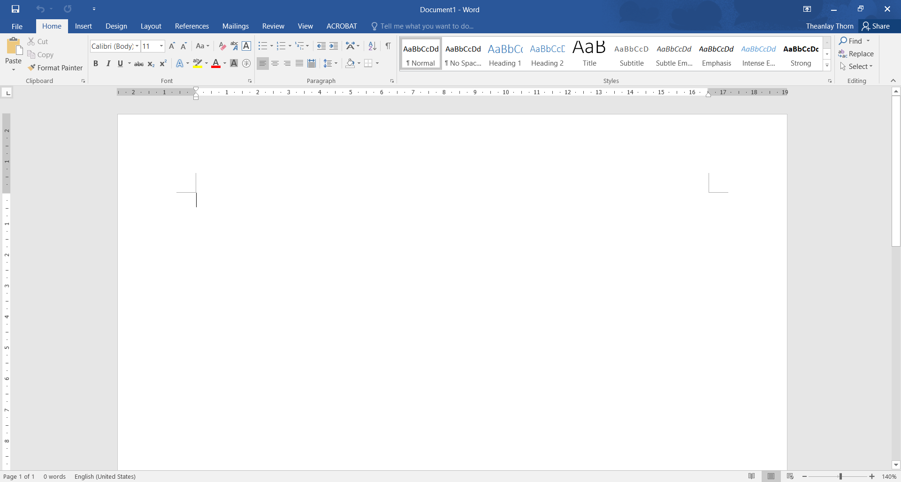
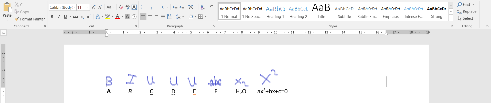

microsoft word គឺជាកម្មវិធីមួយប្រភេទដែលផ្ដល់អ្នកប្រើប្រាស់នៅដំំណើរការនៃការសរសេរតាមប្រព័ន្ធអេឡេចត្រូវនិច។ វាត្រូវបានបង្កើតឡើងនៅថ្ងៃទី២៥ តុលា ឆ្នាំ ១៩៨៣ ក្រោមឈ្មោះថា Multi-Tool world សំរាប់ Xenix systems. ឥឡូវនេ វាត្រូវបានប្រើប្រាស់នៅក្នុងប្រព័ន្ធប្រតិបត្តិការ windows,Marc,Android and IOS

នេះគីជាicone របស់ Micrsoft world
នេះគឺជាទម្រង់នៃMicrosoft world
យើងនិងចាប់ផ្ដើមនិយាយពីមុខងាររបស់វាមួយៗ
ពេលនេះយើងនិងនិយាយពីមុខរបស់font ទាំង៦សិន។ ដែលក្នុងនេះមានដូចជា:
Like me click love here